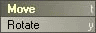

|
To install EditCycle, just follow these steps:
EditCycle includes the following plugins: Change Edit Mode
Change Edit Mode cycles between the item edit modes in Layout, shifting between the Object, Bone Light and Camera edit modes. This operates in a simlar to the ChangeSelectionMode command in Modeler (the space bar in the default keyboard layout). The plug-in determines the current edit mode by reading the type of the currently selected item, changing to the next edit mode in the order of Objects, Bones, Lights, Camears, and then back to Objects again. If noitem are select, it is usually because there are no items of that type in the scene . In this case, Change Edit Mode assumes Layout is in Bone edit mode and skips ahead to Light edit mode, as you are more likly to have no bones in an object than no objects in a scene, and it keeps it from getting stuck in loops jumping from Object to Bone mode. Move/Rotate Cycle
 Move/Rotate Cycle is very similar to the Layout's ChangeTool command (the space bar in the default keyboard layout), except it only cycles between the two tools that apply to all items: Move and Rotate. Unlike Change Edit Mode, there is no way for Move/Rotate Cycle to determine the currently active tool. Instead, each time it is called it activates the opposite tool from when it was last called, no matter what the currently active tool is. This means that if you have activate the Move Tool by clicking it's button on the Layout interface, and the last tool Move/Rotate Cycle changed to was Rotate, calling Move/Rotate Cycle will appear to do nothing as it tells Layout to switch from the Move Tool back to the Move Tool. Bugs? Feature requests? Can't get it to work? Feel free to contact us if you're having any problems or want to request a feature.
All programs presented here are Copyright ©2000-2001 TM Productions, All Rights Reserved. Please contact us if you would like to distribute any of these programs, or if you find any particularly useful. |